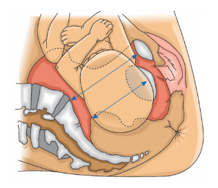
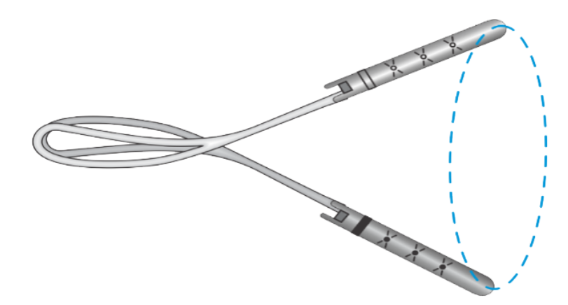
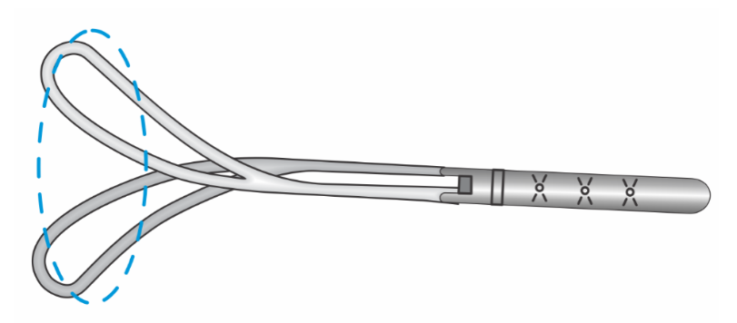

Aula 2
Parto Vaginal Operatório
Introdução
Apesar do fórcipe ter se apresentado como o recurso de maior potencial para salvar vidas na história da medicina, sua atual substituição pela cesárea ocorre devido à falta de experiência da nova geração de obstetras, por incapacidade dos docentes para o ensino dessa prática e pela crescente judicialização médica da obstetrícia. Na atualidade, o fórcipe é um instrumento estigmatizado e há um preconceito social sobre seu uso, que surgiu após traumas maternos e neonatais ocasionados por mau uso do recurso.
Já os vácuo-extratores são instrumentos mais contemporâneos. Apesar de serem menos resolutivos do que os fórcipes, são mais fáceis de usar e apresentam vantagens que os tornaram instrumentos de escolha em diversos países.
É de conhecimento geral que nas últimas década houve aumento das taxas de cesáreas realizadas no segundo estágio do trabalho de parto, com redução concomitante do parto vaginal operatório. Por isso, vale destacar que extração fetal difícil na cesárea é um evento que se associa à falha ou à falta de tentativa de parto vaginal operatório, agravando a morbidade materna e neonatal.
Sendo assim, a aquisição de habilidades e competências relacionadas ao uso de fórcipes e vácuos-extratores é imprescindível no processo atual de formação dos obstetras. Por esse motivo, esses temas serão abordados nesta aula.
Principais indicações e contraindicações ao parto vaginal operatório
As apresentações pélvicas podem ser incompletas ou completas (pélvico-podálico). Veja a imagem a seguir que demonstra os principais tipos de apresentação pélvica.
As principais indicações para o parto vaginal operatório são:
Há recomendação nos seguintes casos: parada de progressão, período expulsivo prolongado, exaustão materna, resistência das partes moles, inércia uterina, prensa abdominal deficiente e morte súbita da parturiente.
Há recomendação nos seguintes casos: sinais de hipóxia fetal aguda, prolapso de cordão umbilical com dilatação cervical completa, assinclitismo persistente, distocia de rotação e apresentação cefálica defletida de terceiro grau (face) com variedade de posição mento anterior.
Em resumo, o parto vaginal operatório é útil em condições ou complicações maternas que contraindiquem esforço expulsivo (cardiopatias, doenças respiratórias graves, acidente vascular cerebral, aneurisma, varizes esofágicas, trauma medular, miastenia gravis, retinopatia proliferativa, patologias neuromusculares etc.), na prevenção do estado fetal não tranquilizador, para feto com sinais de hipóxia no período expulsivo devido ao potencial para reduzir a exposição aos fatores intrapartos que promovem encefalopatia hipóxico-isquêmica e no parto pélvico vaginal, cuja cabeça derradeira não desprende após falhas das manobras iniciais.
E quando o parto vaginal operatório é contraindicado? Há contraindicação nos seguintes casos:
- Se a cabeça fetal não estiver insinuada ou se a variedade de posição for desconhecida.
- Desproporção cefalopélvica, placenta prévia total ou parcial e apresentações anômalas córmica, cefálica defletida de segundo grau (fronte) e cefálica defletida de terceiro grau (face) com variedade de posição mento posterior.
-
Se o feto apresentar suspeita ou diagnóstico de desmineralização óssea (osteogênese imperfeita) ou distúrbios hemorrágicos (hemofilia, doença de von Willebrand, trombocitopenia aloimune).
O parto vaginal operatório em fetos com peso estimado acima de 4 kg deve ser criterioso, quando se opta tanto pelo fórcipe quanto pelo vácuo-extrator. Com relação a fetos com peso estimado inferior a 2 kg, o fórcipe se apresenta como instrumento mais seguro, podendo ser utilizado em fetos tão pequenos quanto 1 kg.
No período pélvico prolongado de fetos com peso estimado acima de 4,5 kg, a cesárea intraparto para prevenção da distocia de ombro é mais indicada do que o parto vaginal operatório baixo ou de alívio.
Da mesma forma, o parto vaginal operatório com a cabeça fetal na pelve média (planos 0 e + 1 de De Lee) deve ser evitado em fetos com peso estimado acima de 4 kg, estando indicada a cesárea intraparto. Nessas situações, a instrumentação do parto deve ser considerada apenas na presença de operadores experientes, mediante avaliação individualizada da posição e tamanho fetais, da história dos partos anteriores e dos hábitos maternos.
Vale lembrar que a extração a vácuo não é isenta de riscos (hemorragia cerebral e retiniana), estando também contraindicada na prematuridade (idade gestacional < 32 semanas). Entre 32 e 36 semanas o vácuo-extrator deve ser usado com muita cautela, pois o limite inferior de segurança para a idade gestacional ainda não está estabelecido. Uma vez que o tempo de extração fetal com o vácuo-extrator é prolongado, o instrumento também não deve ser utilizado diante de sinais de hipóxia fetal.
Os vácuos-extratores também não são indicados para o parto vaginal pélvico (cabeça derradeira) e nem para a apresentação de face, devendo ser substituídos pelo fórcipe nessas situações. Ainda são contraindicações à vácuo-extração, porém relativas: coleta prévia de sangue ou trauma do couro cabeludo fetal, morte fetal, anomalias do polo cefálico (anencefalia, hidrocefalia), macrossomia e tração de prova negativa em tentativa anterior de fórcipe.
Classificações das operações no parto vaginal operatório
As classificações das operações no parto vaginal operatório são baseadas nos planos da bacia e nos mecanismos de parto. A aplicação efetuada antes da insinuação do polo cefálico (“fórcipe alto”) é contraindicada. A classificação mais atual é a do Colégio Americano de Ginecologia e Obstetrícia (2015), endossada pelo Colégio Real de Obstetras e Ginecologistas (2020).
Os principais pré-requisitos para o parto vaginal operatório incluem informação e concordância quanto aos benefícios e riscos do procedimento, pelve materna adequada, estimativa do peso fetal realizada (clínica ou ultrassonográfica), insinuação do polo cefálico, dilatação e apagamento cervical completos, membranas rotas, esvaziamento vesical prévio, conhecimento da apresentação e da variedade de posição, e anestesia satisfatória (bloqueio regional nas aplicações médias/rotatórias, bloqueios de pudendo ou perineal nas aplicações baixas e de alívio). Veja mais detalhes sobre a classificação das operações:
| Alívio | Baixo | Médio |
|---|---|---|
|
O couro cabeludo fetal é visível no introito vaginal, sem separação dos pequenos lábios; o crânio fetal já atingiu o assoalho pélvico e está próximo ou ocupando o períneo; a sutura sagital está no diâmetro anteroposterior (OP, OS) ou no oblíquo (OEA, ODA, OEP, ODP), com rotação que não excede 45º. |
Vértice cefálico no plano +2 de De Lee ou abaixo, sem atingir o assoalho pélvico; podendo ocorrer duas situações:
a) Rotação ≤ 45º (OEA, ODA, OEP, ODP); |
O polo cefálico se encontra insinuado, porém acima do plano +2 de De Lee; a rotação pode ser ≤ 45º ou > 45º.

Fonte: Felipe Starling (2025)
|
Papel da ultrassonografia no parto vaginal operatório
A ultrassonografia pode ser utilizada para confirmar o diagnóstico da variedade de posição e da altura do polo cefálico, auxiliando na avaliação das probabilidades de sucesso e dos riscos do parto vaginal operatório. Também já foi descrito na monitorização objetiva das aplicações rotacionais.
Os parâmetros a serem avaliados na determinação e na variedade de posição são o cerebelo, órbitas e foice da linha média. As medidas ultrassonográficas do perímetro cefálico, da distância entre o períneo e o crânio fetal e do ângulo de progressão são preditivas de partos vaginais operatórios difíceis.
Estudos revelam que a ultrassonografia aumenta a precisão diagnóstica da variedade de posição, sem diferenças nos resultados maternos ou neonatais. Portanto, ainda não existem evidências suficientes para recomendar o uso rotineiro de ultrassonografia abdominal ou perineal para avaliação da estação, flexão e descida da cabeça fetal no segundo estágio do trabalho de parto.
Principais instrumentos recomendados para o parto vaginal operatório na atualidade
Os fórcipes e vácuos-extratores são os principais instrumentos recomendados para extração do feto do canal de parto, executada por meio de apreensão e tração do polo cefálico fetal. A escolha do instrumento é relacionada com a preferência e experiência do operador, bem como com as condições maternas e fetais. O uso profilático (de alívio) desses instrumentos tem o objetivo de diminuir o esforço e o desconforto do período pélvico. Vamos conhecer melhor cada instrumento?
> Fórcipes
Os fórcipes são instrumentos que possuem dois ramos, cada um com quatro componentes: colher (apreende o polo cefálico), haste (ou pedículo; situa-se entre o cabo e a colher), articulação e cabo.
Os modelos mais conhecidos na atualidade são os de Simpson, Kielland, Piper e Marelli. Vale lembrar que os fórcipes são mais resolutivos do que os vácuos-extratores, porém são mais associados a lacerações perineais graves.
Agora que você já viu as especificações de cada tipo de fórcipes, vamos falar sobre a aplicação desses instrumentos?
Para aplicação dos ramos, são executados movimentos de “introduz-abaixa”, penetrando com as colheres sempre pelos vazios sacrais (espaços bilaterais entre o sacro e os ísquios). Nas variedades oblíquas, o primeiro ramo a ser aplicado deve ser sempre o posterior. Nas variedades transversas (fórcipe de Kielland), o primeiro ramo a ser inserido é opcional, porém o ramo anterior é habitualmente preferível. Nas variedades diretas (occipitopúbica [OP] e occipitossacra [OS]), o ramo esquerdo deve ser aplicado primeiro, com o intuito de evitar a necessidade de descruzamento dos ramos após a aplicação do segundo (ramo direito).
Em caso de polo cefálico rodado, o ramo que será aplicado no parietal anterior é introduzido por meio de tríplice movimento espiroidal, que inclui, sequencialmente, translação, abaixamento e torção do cabo (espiral de La Chapelle). É importante ressaltar que a rotação manual é uma alternativa para correção do polo cefálico rodado (variedades de posição transversas e oblíquas). O polo cefálico é apreendido com as pontas dos dedos posicionadas nos ossos parietais (polegar de um lado e os demais dedos do outro). Durante a contração uterina, a cabeça fetal é discretamente elevada, fletida e rodada, até se posicionar em variedade de posição OP.
Principais tempos operatórios e detalhes técnicos da aplicação dos fórcipes
A aplicação do fórcipe deve ser precedida de sondagem vesical e anestesia materna satisfatória. A anestesia raquidiana baixa (“em sela”) é preferencial, principalmente nas situações de urgência e nos fórcipes médios e rotacionais. Esse tipo de analgesia possui as vantagens de rápida instalação, propiciando bloqueio anestésico das fibras sacrais e relaxamento perineal, sem interferências na contratilidade uterina, prensa abdominal e qualidade dos puxos. Nas situações em que a parturiente já se encontra sob analgesia por bloqueio epidural, com cateter instalado, a infusão de doses maiores de anestésicos será necessária e o tempo para instalação satisfatória da analgesia será maior.
Clique aqui e saiba mais sobre a rotação realizada nas variedades oblíquas e transversas, simultaneamente à tração.
Depois de seguir o fluxo dos tempos operatórios, o próximo passo é a retirada dos ramos do fórcipe, que deve anteceder a saída completa da cabeça fetal, devendo ser efetuada assim que a mandíbula estiver acessível. Os ramos são retirados em ordem inversa de sua aplicação.
O desprendimento do polo cefálico é completado pela Manobra de Ritgen modificada. Após completadas a extração fetal e a dequitação, efetua-se a revisão do canal de parto e, se necessário, o reparo das lacerações e/ou episiorrafia. Apesar da alta eficácia para resolução do parto, a tentativa de fórcipe deve ser interrompida se não houver progressão do polo cefálico após três trações efetuadas com pega correta e operador experiente.
Técnicas específicas do fórcipe que exigem maior habilidade e competência do operador
Fórcipes médios e/ou rotacionais são opções apropriadas em circunstâncias selecionadas e exigem habilidade e experiência do operador. As variedades de posição oblíquas posteriores e transversas e a cabeça derradeira no parto pélvico determinam técnicas específicas de aplicação do fórcipe.
No fórcipe em variedades oblíquas posteriores (ODP e OEP), existem três opções técnicas, relacionadas com o modelo, disponibilidade dos fórcipes e habilidade e preferência do operador. A rotação para OP exige mais habilidade, mas deve ser preferível sempre que possível, evitando-se o desprendimento do polo cefálico em OS. Em todas as possibilidades de aplicação, o primeiro ramo a ser introduzido deve ser o posterior. Subsequentemente, o segundo ramo (anterior) é introduzido por meio da espiral de La Chapelle. Veja as opções de aplicação:
Efetuar a rotação de 45° no sentido posterior, para OS. Nessa situação, os ramos dos fórcipes são aplicados com a curvatura pélvica das colheres em direção anterior. Apesar de a rotação não ser ampla, o desprendimento do polo cefálico ocorre em variedade posterior (OS), o que exige tração mais vigorosa e indica o fórcipe de Simpson como instrumento preferencial. A rotação deve ser efetuada em amplo movimento de circundução dos cabos.
Circundação dos cabos
Efetuar uma ampla rotação de 135° no sentido anterior para OP, que tem como vantagem evitar o desprendimento do occipital contra a musculatura perineal, seguida de extração em pega única.
Essa técnica exige experiência do operador e uso do fórcipe de Kielland. Aqui, a discreta curvatura pélvica desse fórcipe permite que as colheres sejam direcionadas para baixo no momento da aplicação. Completados os 135° de rotação (em “chave de fechadura”), a curvatura pélvica do fórcipe se posiciona no mesmo sentido da curvatura pélvica materna e o desprendimento cefálico ocorre em variedade OP, dispensando uma segunda pega.
Chave de fechadura
Executar a rotação de 135° por meio da dupla pega de Scanzoni utilizando um fórcipe de Simpson, que também obtém a vantagem do desprendimento cefálico em variedade OP. A técnica é útil diante da indisponibilidade do fórcipe de Kielland e/ou pela presença de operador com destreza e apreço para o procedimento.
A primeira aplicação é realizada com a curvatura pélvica do fórcipe direcionada para cima, na direção do bregma fetal. Após rotação de 135°, efetuada com amplo movimento de circundução dos cabos, a curvatura pélvica do fórcipe fica direcionada para baixo, e o polo cefálico em variedade OP. Uma vez que as colheres do fórcipe de Simpson possuem ampla curvatura pélvica, o instrumento deve ser removido para uma segunda aplicação, sendo proscrita a extração do polo cefálico com a curvatura pélvica das colheres voltadas para baixo. A segunda pega segue os princípios para aplicação e desprendimento do polo cefálico completamente rodado (OP).
Entre essas três técnicas nas variedades posteriores, a rotação de 135° com o fórcipe de Kielland em pega única é a mais vantajosa, porque propicia o desprendimento em variedade OP, com redução da manipulação vaginal e do emprego de força.
Para aplicação em variedades transversas (occipito-direita-transversa [ODT] e occipito-esquerda-transversa [OET]), o fórcipe mais indicado é o de Kielland. A opção de aplicar primeiro o ramo anterior é vantajosa, uma vez que exige ampla espiral de La Chapelle, que pode ser dificultada quando se opta por aplicar o primeiro ramo posteriormente na pelve, o que desloca o polo cefálico anteriormente e dificulta a inserção do ramo anterior por meio do triplo movimento espiroidal. Assim, o primeiro ramo é aplicado anteriormente mediante movimentos de translação, abaixamento e torção do cabo (espiral de La Chapelle – técnica itinerante). O segundo ramo é introduzido posteriormente, de forma direta. Frequentemente, o assinclitismo está presente nessas variedades de posição, sendo necessária sua correção previamente à verificação da pega correta, rotação e tração. Para isso, um dos ramos deve penetrar mais do que o outro no canal de parto, a depender do tipo de assinclitismo (anterior ou posterior). A correção para a posição de sinclitismo é realizada deslizando-se os ramos do fórcipe já articulados. É recomendável puxar o ramo que penetrou mais no canal de parto, evitando empurrar o ramo que penetrou menos, na intenção de evitar trauma nas porções superiores do canal de parto. A correção do assinclitismo é confirmada por meio dos critérios de Laufe, antes de se efetuar a rotação (em “chave de fechadura”) e tração.
Sinclitismo, assinclitismos posterior (Litzman) e anterior (Nagele)

Por possuir ramos maiores e ampla curvatura perineal, o fórcipe mais indicado na impactação da cabeça derradeira é o de Piper. Na técnica, um auxiliar ergue o corpo do feto pelos membros inferiores ou com uma compressa posicionada sob o abdome fetal. Posicionado horizontalmente, o ramo esquerdo é introduzido primeiro, de forma direta. Subsequentemente, o ramo direito é introduzido de maneira similar, sem maior dificuldade para articulação com o ramo esquerdo. Na verificação da pega correta, a linha facial deve estar equidistante aos ramos articulados do fórcipe, o dedo não deve penetrar pelas fenestras das colheres e o mento deve estar próximo ou no máximo a 1,5 cm do plano das hastes. Nas variedades anteriores, a aplicação é realizada em OP, com os ramos sendo introduzidos por baixo do corpo fetal. A tração deve ser axial, seguindo a curvatura da pelve materna, até posicionar a região suboccipital sob o arco púbico. A cabeça é extraída acentuando-se a flexão e, subsequentemente, deslocando-se o instrumento articulado em direção ao abdome materno. O instrumento deve ser desarticulado antes da extração completa do polo cefálico.
Técnica com Fórcipe de Piper

Nas variedades posteriores, os ramos são introduzidos por cima do corpo fetal e a aplicação ocorre em OS. A tração é exercida para a frente, com a mandíbula e o pescoço fetal se apoiando sobre a borda superior da sínfise púbica. O tronco fetal é, então, elevado em direção ao abdome materno. É importante ressaltar que a rotação manual é uma alternativa para correção do polo cefálico rodado (variedades de posição transversas e oblíquas). O polo cefálico é apreendido com as pontas dos dedos posicionadas nos ossos parietais (polegar de um lado e os demais dedos do outro). Durante a contração uterina, a cabeça fetal é discretamente elevada, fletida e rodada, até se posicionar em variedade de posição OP.
> Vácuo-extrator
Por causar menos trauma materno do que o fórcipe, o vácuo-extrator é uma excelente alternativa para o parto vaginal operatório, principalmente para a extração de alívio, e suas indicações são semelhantes às do fórcipe. Entretanto, como o vácuo-extrator requer maior tempo para a extração fetal, não deve ser o método preferencial em emergências.
As principais vantagens do vácuo-extrator incluem:
- Redução nos erros de aplicação.
- Facilidade de aprendizagem.
- Possibilidade de autodirecionamento e autorrotação.
- Menor emprego de força sobre a cabeça fetal.
-
Menor necessidade de analgesia e de episiotomia e redução das lacerações do trajeto.
Os vácuos-extratores são instrumentos que possuem uma campânula, um tubo de conexão e uma bomba de sucção. Ele funciona da seguinte forma: por meio de pressão negativa, a campânula, aplicada no couro cabeludo, traciona a cabeça fetal.
Vale destacar que as campânulas podem ser rígidas (de metal), semirrígidas ou flexíveis e possuem formato de sino ou cogumelo. Os vácuo-extratores de campânulas flexíveis apresentam taxas maiores de falha, porém apresentam menores incidências de trauma no couro cabeludo do neonato, devendo ser preferenciais em partos vaginais simples.
Principais tempos operatórios e detalhes técnicos da aplicação do vácuo-extrator
O bloqueio do nervo pudendo pode ser preferível à anestesia neuroaxial quando se opta pela vácuo-extração. A infiltração de anestésico local é bilateralmente realizada abaixo das espinhas ciáticas. Diferentemente das colheres dos fórcipes, as campânulas dos vácuo-extratores não entram em contato significativo com as paredes vaginais e nem aumentam o diâmetro do polo cefálico.
A extração a vácuo habitualmente é alcançada com até três trações. Três trações suaves adicionais são aceitáveis para completar a deflexão do polo cefálico. A tentativa de extração a vácuo deve ser interrompida quando não houver evidência de descida progressiva da cabeça fetal, quando a campânula se desprender em três ocasiões ou quando o tempo de tração exceder 20 minutos. Durante a tração, o desprendimento brusco da campânula, por perda de vácuo e movimentos vigorosos, deve ser evitado, uma vez que propicia lacerações no couro cabeludo.
Vale lembrar que o uso sequencial de vácuo-extrator e fórcipe está associado ao aumento de complicações neonatais e não deve ser rotineiramente realizado. Sendo assim, após a falha da tentativa de extração a vácuo, os riscos e benefícios de uma tentativa sequencial de fórcipe ou de cesárea devem ser criteriosamente avaliados.
> Espátulas e o dispositivo Odon
Existem alguns instrumentos menos difundidos, mas que podem ser utilizados no parto vaginal operatório: espátulas e dispositivo Odon. Conheça esses instrumentos a seguir.
São instrumentos que possuem dois ramos independentes e simétricos, que não se articulam. Cada ramo possui haste, cabo e colher sólida e larga. Os ramos atuam como alavancas independentes e a cabeça fetal não é comprimida entre as colheres.
A ação das espátulas é semelhante à do calçador de sapato, cuja função é ajudar a deslizar. Aqui vamos falar sobre as espátulas de Thierry e de Velasco. As espátulas de Thierry são maiores e apresentam uma ligeira curvatura pélvica na borda superior da colher. Já as espátulas de Velasco são pequenas e mais retas.
Se comparadas aos fórcipes e vácuo-extratores, as taxas de complicações neonatais das espátulas parecem ser semelhantes ou inferiores. As taxas de lacerações perineais graves também são similares, mas as lacerações de parede vaginal são mais comuns.
É um instrumento de polietileno tipo filme, que cria um envoltório de ar ao redor da cabeça fetal, permitindo a extração por meio de tração. Esse instrumento apresenta o potencial de ser mais seguro e mais fácil de aplicar do que os fórcipes e vácuo-extratores. Atualmente, vem sendo utilizado em testes clínicos experimentais multicêntricos, ainda não liberado pelas agências reguladoras para a prática clínica. Em um estudo observacional piloto, apresentou taxa de sucesso no nascimento próxima de 50%, sem desfechos adversos maternos ou neonatais graves, porém inferior às dos demais instrumentos.
Sequenciamento dos instrumentos e o manejo diante das falhas de tentativas do parto vaginal operatório
O uso sequencial de fórcipe e vácuo-extrator está associado ao aumento das taxas de hemorragia cerebral subdural e subaracnoide nos recém-natos, assim como de lesões do nervo facial e do plexo braquial. As lacerações perineais graves também são mais comuns nesse caso.
A eficácia na resolução do parto vaginal operatório é maior com os fórcipes do que com os vácuo-extratores. Portanto, após a falha de tentativa de vácuo-extração, os riscos da tentativa subsequente de fórcipe devem ser confrontados com os riscos de uma cesárea. Contrariamente, em situações de falha de tentativa de fórcipe, a tentativa de vácuo-extração é contraindicada, e a cesárea subsequente deve ser realizada. Vale lembrar que antes da realização da cesárea, é recomendável desimpactar o polo cefálico por meio de manobras ou de outros instrumentos (alavancas de Coyne, Sellheim ou Murless; C-Snorkel; fetal pillow).
Mnemônico ABCDEFGHIJ
Agora que você já viu as principais informações sobre o uso do fórcipe e do vácuo- extrator, vamos falar sobre o mnemónico ABCDEFGHIJ, uma forma de você memorizar a sequência de ações para a realização segura e eficaz da utilização desses instrumentos no parto operatório vaginal.
Recomendações de episiotomia, profilaxia antibiótica e tromboprofilaxia no parto vaginal operatório
O parto vaginal operatório é uma das indicações da episiotomia, que deve ser seletiva. As recomendações atuais não recomendam episiotomia de rotina em parto vaginal operatório devido à precária cicatrização e ao desconforto associados à episiotomia mediolateral e ao risco de lesão do esfíncter anal e do reto com a episiotomia mediana.
Entretanto, no contexto da instrumentação do parto, a episiotomia se apresenta como um procedimento modificador de risco, e não como tratamento de lacerações perineais graves. A busca da melhor evidência científica referente ao efeito da episiotomia no risco de lacerações perineais graves no parto vaginal operatório, a ser obtida por meio de ensaios clínicos randomizados, é dificultada pelo desafio de compor grupos dicotomizados em 0% e 100% de realização do procedimento, assim como pelos vieses introduzidos pela heterogeneidade da habilidade dos operadores e pela dificuldade de garantir que um ângulo apropriado de incisão (entre 40° e 60°) seja sempre obtido no grupo de intervenção.
Sendo assim, permanece o valor dos grandes estudos observacionais, que demonstram que a episiotomia mediolateral pode desempenhar papel importante na prevenção de lacerações perineais graves durante o parto vaginal operatório. Por isso, selecionar parturientes para a realização ou não de episiotomia na vigência de parto vaginal operatório exige experiência e habilidade do operador, principalmente quando se opta pelo desprendimento cefálico posterior (OS).
Lembre-se: o momento da episiotomia não deve anteceder a prova de tração e as manobras de rotação, evitando-se a realização do procedimento diante da falha de tentativa do parto vaginal operatório. Portanto, após a descida da apresentação, estando o occipital abaixo da sínfise púbica, no desprendimento anterior (OP), inicia-se a elevação do polo cefálico por meio de deslocamento dos cabos articulados do fórcipe em direção ao abdome materno, e depois disso avalia-se a necessidade da episiotomia.
Como forma de profilaxia antibiótica é recomendada uma dose endovenosa única de antibiótico no parto vaginal operatório a fim de reduzir significativamente a probabilidade de infecção, e apresentando poucos eventos adversos. São também recomendadas técnicas corretas de assepsia e uso de equipamentos de proteção individual.
Após o parto vaginal operatório, as puérperas devem ser reavaliadas quanto ao risco de tromboembolismo venoso e necessidade de tromboprofilaxia. Fatores de risco, como o prolongamento do trabalho de parto e imobilidade, são frequentemente associados à instrumentação do parto.
Principais complicações maternas e neonatais do parto vaginal operatório
Quando utilizados com as técnicas corretas, fórcipes e vácuo-extratores apresentam baixos índices de complicações maternas e neonatais. Veja agora as complicações relacionadas a cada tipo de instrumento:
As complicações são: lacerações no canal de parto (uterinas, cervicais e/ou vaginais), lacerações perineais graves (terceiro e quarto graus), prolongamento da episiotomia, lesões vesicais e/ou uretrais e hematomas.
Já as complicações neonatais incluem: hemorragias subgaleais, escoriações, lacerações faciais, compressões oculares, abrasões da córnea, paralisia dos nervos facial e/ou hipoglosso, lesão de coluna cervical, fratura craniana e hemorragia intracraniana.
As lacerações perineais de terceiro e quarto graus (graves) também são complicações maternas relacionadas à extração a vácuo, porém em proporções menores do que em parto instrumentado com fórcipe. Apesar da associação entre parto vaginal operatório e lacerações perineais graves, a função do assoalho pélvico e os escores de função sexual dentro de um ano do parto não parecem diferir em relação ao parto cesáreo. É importante que os obstetras estejam capacitados para o reconhecimento e tratamento das complicações maternas.
As principais complicações neonatais do vácuo-extrator ocorrem pelo fato de a tração ser aplicada no couro cabeludo. Os problemas mais comuns são lacerações de couro cabeludo, céfalo-hematomas e hemorragias intracranianas, subgaleais e retinianas. Devido a essas questões, é imprescindível informar aos neonatologistas sobre a técnica utilizada no parto vaginal operatório com o intuito de avaliar e observar potenciais complicações neonatais associadas.
Analgesia e cuidados do trato urinário após o parto vaginal operatório
A analgesia no pós-parto com anti-inflamatórios não esteroidais e paracetamol deve ser realizada rotineiramente após a instrumentação do parto com fórcipe ou vácuo-extrator.
As puérperas devem ser orientadas sobre o risco de retenção urinária presente com a associação entre analgesia e parto vaginal operatório. Por isso, elas devem ser estimuladas a esvaziar a bexiga no período pós-parto e ter o tempo e volume urinários (incluindo o volume residual) monitorados. A sondagem vesical intermitente, ou mesmo de demora, pode ser necessária por 24 a 48 horas. Em disfunções vesicais mais duradouras, a avaliação urológica e o autocateterismo intermitente de alívio podem ser necessários. A fisioterapia pode ser oferecida como uma estratégia de redução do risco de retenção urinária dentro dos três meses no pós-parto.
Fim da aula
Na evolução da Pré-natal de Qualidade, o fórcipe se apresentou como o recurso de maior potencial salvador de vidas. Os vácuos-extratores, apesar de mais recentes, também são dispositivos eficazes para a instrumentação do parto e ainda oferecem a vantagem de simplificar a técnica operatória.
Com conhecimento e habilidade adequados, o custo-benefício e a segurança da instrumentação do parto vaginal são favoráveis e endossam as recomendações atuais das diretrizes para o parto vaginal operatório. A despeito das vantagens óbvias, o potencial do parto vaginal operatório se encontra atualmente limitado, tanto por não conhecimento quanto por mau uso.
A progressiva substituição de fórcipes e vácuos-extratores por cesárea, motivada pelo despreparo da nova geração de obstetras, parece introduzir uma real possibilidade de desaparecimento desses instrumentos da prática médica de Pré-natal de Qualidade. O surgimento de novos instrumentos, que, apesar de menos resolutivos, exigem menos habilidade técnica do operador parece ser um reflexo das atuais inabilidades dos obstetras para o parto vaginal operatório. Portanto, o treinamento nessas importantes habilidades deve ser reconsiderado com urgência, antes que essa arte seja perdida para sempre.
Agora, vamos revisitar algumas informações importantes deste tema?
- Quando utilizados com a técnica correta, fórcipes e vácuo-extratores apresentam baixos índices de complicações.
- Para o feto com sinais de hipóxia no período expulsivo, o parto vaginal operatório tem potencial para reduzir a exposição aos fatores intrapartos que promovem a encefalopatia hipóxico-isquêmica.
- Fórcipes médios e/ou rotacionais são opções apropriadas em circunstâncias selecionadas e exigem habilidade e experiência.
- Os fórcipes são mais resolutivos do que os vácuos-extratores para o parto vaginal operatório, porém são mais associados a lacerações perineais graves.
- Céfalo-hematoma é mais provável de ocorrer com o aumento de duração da vácuo-extração.
- Os vácuo-extratores de campânulas flexíveis apresentam taxas maiores de falha, porém apresentam menores incidências de trauma no couro cabeludo do neonato.
Recomendações
- O parto vaginal operatório é contraindicado se a cabeça fetal não estiver insinuada, se a variedade de posição for desconhecida ou se o feto apresentar suspeita ou diagnóstico de desmineralização óssea ou distúrbios hemorrágicos.
- Avaliação ultrassonográfica antes da instrumentação do parto é recomendada quando existir dúvida na avaliação clínica da variedade de posição.
- Episiotomia de rotina não está recomendada no parto vaginal operatório devido à precária cicatrização e ao desconforto associados à episiotomia mediolateral e ao risco de lesão do esfíncter anal e do reto com a episiotomia mediana. Quando individualmente indicada, deve ser mediolateral e realizada somente após o sucesso da prova de tração.
- No período pélvico prolongado de fetos com peso estimado acima de 4,5 kg, a cesárea intraparto para prevenção da distocia de ombro é preferível ao parto vaginal operatório baixo ou de alívio. Similarmente, o parto vaginal operatório com a cabeça fetal na pelve média deve ser evitado em fetos com peso estimado acima de 4 kg, estando indicada a cesárea intraparto. Nessas situações, a instrumentação do parto deve ser considerada apenas na presença de operadores experientes, mediante avaliação individualizada da posição e tamanho fetais, da história dos partos anteriores e dos hábitos maternos.
- A tentativa de uso de fórcipe deve ser interrompida se não houver progressão do polo cefálico após três trações efetuadas com pega correta e operador experiente.
- A extração a vácuo deve ser evitada antes de 32 semanas e deve ser cautelosa entre 32 e 36 semanas, pois o limite inferior de segurança para a idade gestacional ainda não está estabelecido.
- A extração a vácuo deve ser interrompida quando não houver evidência de descida progressiva da cabeça fetal ou quando a campânula se desprender em três ocasiões.
- O uso sequencial de vácuo-extrator e fórcipe está associado ao aumento de complicações neonatais e não deve ser rotineiramente realizado. Após falha da tentativa de extração a vácuo, os riscos e benefícios de uma tentativa sequencial de uso de fórcipe ou de cesárea devem ser avaliados.
-
Neonatologistas devem ser informados sobre a técnica utilizada no parto vaginal operatório.
Você concluiu esta aula, continue se empenhando nos seus estudos. Siga para a próxima aula!